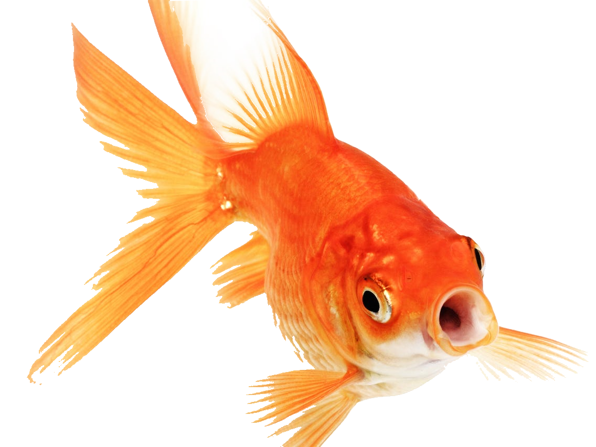

Hjem
Opskrifter
Om
Billeder af fisk
/https://tf-cmsv2-smithsonianmag-media.s3.amazonaws.com/filer/d6/93/d6939718-4e41-44a8-a8f3-d13648d2bcd0/c3npbx.jpg)


/yellow-tang-fish-508304367-5c3d2790c9e77c000117dcf2.jpg)